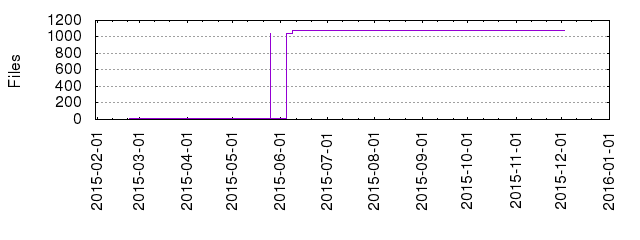

Files
- Total files
- 1080
- Total lines
- 302425
- Average file size
- 8117.01 bytes

| Extension | Files (%) | Lines (%) | Lines/file |
|---|
| 168 (15.56%) | 5292 (1.75%) | 31 |
| coffee | 2 (0.19%) | 579 (0.19%) | 289 |
| csv | 5 (0.46%) | 17602 (5.82%) | 3520 |
| dtd | 1 (0.09%) | 870 (0.29%) | 870 |
| html | 3 (0.28%) | 228 (0.08%) | 76 |
| ini | 1 (0.09%) | 5 (0.00%) | 5 |
| jade | 3 (0.28%) | 17 (0.01%) | 5 |
| js | 565 (52.31%) | 125717 (41.57%) | 222 |
| jsm | 4 (0.37%) | 65 (0.02%) | 16 |
| json | 129 (11.94%) | 97105 (32.11%) | 752 |
| markdown | 5 (0.46%) | 793 (0.26%) | 158 |
| md | 153 (14.17%) | 21337 (7.06%) | 139 |
| py | 11 (1.02%) | 427 (0.14%) | 38 |
| sh | 4 (0.37%) | 16 (0.01%) | 4 |
| styl | 2 (0.19%) | 296 (0.10%) | 148 |
| txt | 5 (0.46%) | 22658 (7.49%) | 4531 |
| xml | 4 (0.37%) | 9264 (3.06%) | 2316 |
| yml | 15 (1.39%) | 63 (0.02%) | 4 |